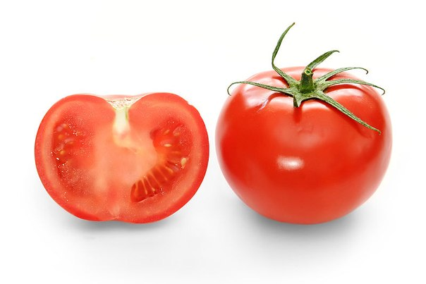

Секция #1


Свёкла
- СвЁкла, а не свеклА
- Древние греки настолько ценили этот овощ, что подарки в знак благодарности делали в форме серебряной свеклы
- Первые упоминание о свекле на Руси относят к X—XI векам, её запекали в печи и подавали к чаю
- Широкое распространение она получила в XIV столетии, а в XVII произошло разделение на кормовые и пищевые сорта.
Секция #2



Помидорка
- Навание произошло от итал. pomo d'oro — золотое яблоко
- Родина — Перу
- Долгое время томаты считались несъедобными и даже ядовитыми. Сущесвует легенда как подкупленный повар пытался отравить блюдом из помидоров Джорджа Вашингтона
- Cодержат "гормон счастья" — серотонин, поэтому способны поднимать настроение даже в самый унылый и пасмурный день.
Баклажан
- Родина баклажана — Индия
- По-английски баклажан называется еggplant. Он появилось в XIX веке, благодаря сорту с белыми небольшими плодами, похожими на куриные яйца
- Древние греки были убеждены, что отведавшие его лишаются рассудка и называли «яблоком безумия»
- На самом деле употребление баклажанов поможет защитить мозг от свободных радикалов
Секция #3
Питайя
- Содержит много клетчатки, богат антиоксидантами, обладает противовоспалительными свойствами
- В Тайланде существует легенда: В ней рассказывается о древнем времени и о смертельной битве людей с драконами. Когда обессиленный исполин уже не мог изрыгать на людей пламя, из пасти его выпадал удивительный фрукт. Поэтому в Тайланде он носит название сердце дракона
Секция #4

Капуста
- Легенда, связанная с происхождением капусты, гласит о том, что капли пота скатились на землю с головы бога Юпитера. Из них и выросла капуста
- Во время бракосочетания царя Алексея Михайловича с Натальей Нарышкиной на свадебном столе подавали капусту «во щах богатых».
- По капусте гадали о суженом: высаживали в одну лунку капусту и брюкву и называли при этом имена парня и девушки. Если оба растения вырастали хорошо – играли свадьбу, а если нет, то от предложения отказывались.
Перец Чили
- Перец чили был впервые культивирован Центральной и Южной Америке около 3000 до н.э
- Чили перец содержит капсацин — бесцветное, острое, кристаллическое вещество, которое и придает перцу такой вкус.
- Более 140 сортов перца чили выращивается в Мексике
- Чили является второй наиболее распространенной специей в мире, после соли
Секция #5
Лимон
- Родом из Индии или Китая
- Испанцы считают лимон символом безответной любви
- Шостакович на чаепитии у королевы Великобритании Елизаветы II съел дольку лимона, после того, как выпил чай бывшую в нём. Это вызвало шок у приглашённых, так как лимон нужно было оставить в чашке. Однако Елизавета II поступила по-королевски. Она вслед за известным композитором съела и свой ломтик лимона. То же пришлось сделать и остальным. А теперь это вошло в традицию.
Банан
- Банановая пальма — трава, однако банановый стебель является очень плотным и высоким, имеет древовидную структуру, поэтому существует заблуждение, что бананы растут на деревьях
- Таким образом, банан — это ягода, а не фрукт
- На кенийском референдуме о принятии конституции 2005 года сторонники проекта использовали в качестве своего символа банан, а противники — апельсин.
- Слово "банан" с арабского языка переводится как палец. Поэтому правильнее говорить не гроздь бананов, а кисть.
Секция #6
Малина
- Малину упоминал в числе других плодовых растений Катон Старший еще в III веке до н.э
- Больше всего малины выращивают в России
- Малина — популярная героиня русских сказок, является символом родины, воли, свободы, сладкой привольной жизни, в отличие от калины, которая символизирует горькую долю, неволю